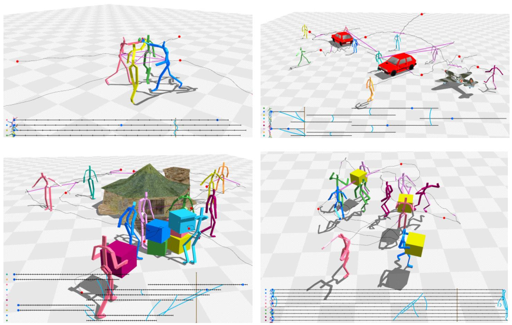

Synchronized Multi-Character Motion Editing

The ability to interactively edit human motion data is essential for character animation. We present a novel motion editing technique that allows the user to manipulate synchronized multiple character motions interactively. Our Laplacian motion editing method formulates the interaction among multiple characters as a collection of linear constraints and enforces the constraints,while the user directly manipulates the motion of characters in both spatial and temporal domains. Various types of manipulation handles are provided to specify absolute/relative spatial location, direction, time, duration, and synchronization of multiple characters. The capability of non-sequential discrete editing is incorporated into our motion editing interfaces, so continuous and discrete editing is performed simultaneously and seamlessly. We demonstrate that the synchronized multiple character motions are synthesized and manipulated at interactive rates using spatiotemporal constraints.
Manmyung Kim, Kyunglyul Hyun, Jongmin Kim, Jehee Lee, Synchronized Multi-Character Motion Editing, ACM Transactions on Graphcis (SIGGRAPH 2009), to appear.
PDF (2.1MB)
QuickTime H.264 (60.3MB)
PPTX (8.3MB)
PPTX + Video Files (183MB)

Manmyung Kim
Kyunglyul Hyun
Jongmin Kim
Jehee Lee